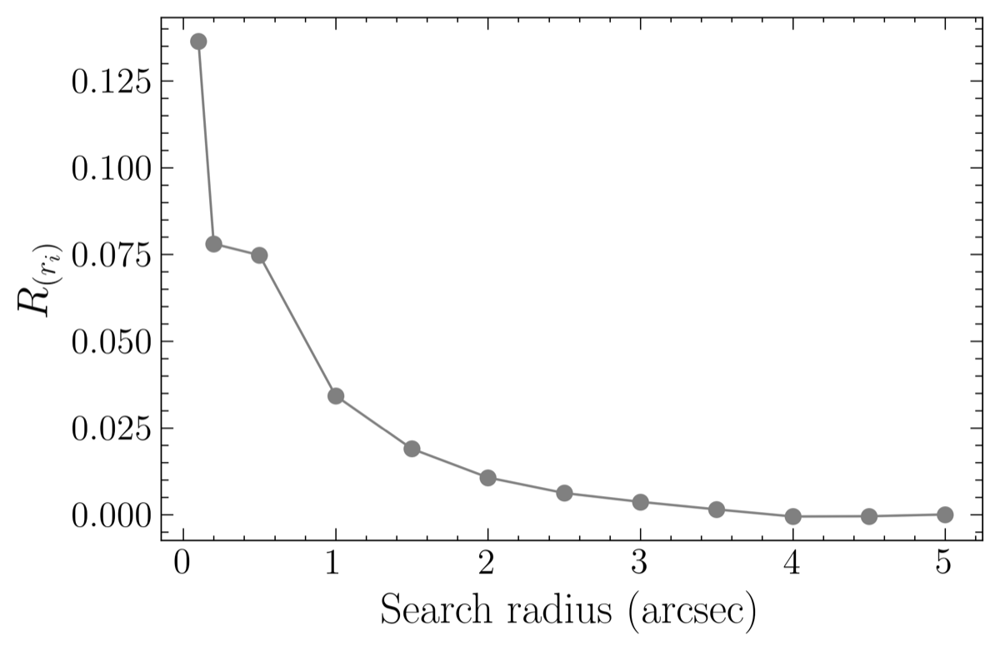
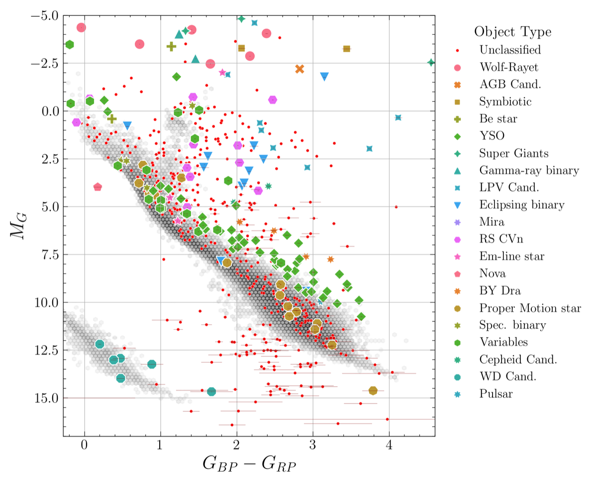
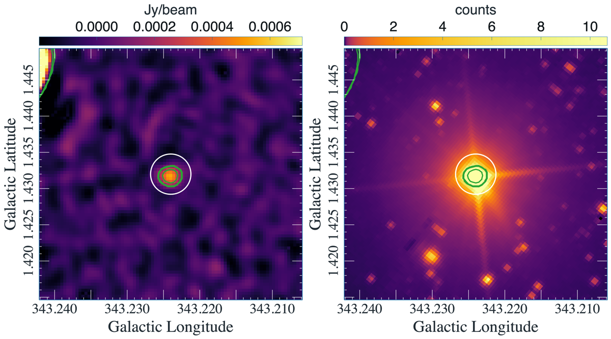

Published in Monthly Notices of the Royal Astronomical Society, Vol. 540, Issue 3 (July 2025), pp. 2685–2702 · Read the paper (open access) · arXiv
How do you find the stars hiding among half a million radio sources? That was the problem this paper set out to solve. The SARAO MeerKAT Galactic Plane Survey (SMGPS) is a 1.3 GHz radio continuum survey covering nearly half the Galactic plane — 443,455 radio sources in total — and Gaia DR3 provides optical positions for 1.81 billion objects. Matching the two sounds like a nearest-neighbour problem. In the crowded Galactic plane it is not.
The Problem
Most compact radio sources in the survey are not stars at all: they are background galaxies, quasars, and active galactic nuclei. In fields this crowded, a basic positional match is dominated by chance alignments. To measure the problem rather than guess at it, a Monte Carlo simulation randomised each radio source’s position and re-matched against Gaia, giving the expected rate of spurious matches at every search radius. The answer was sobering: reliability stayed below about 15% at every radius tested, ruling out the naive approach entirely.

Cross-match reliability versus search radius for the naive full-catalog approach — below roughly 15% everywhere.
First Attempt: Distance-Limited Matching
The first refinement restricted candidate Gaia sources to specific distance bands, from 50 pc out to 3,500 pc, using Bayesian distance estimates that account for interstellar extinction and Gaia’s variable magnitude limits. The result was a sharp improvement in purity at close range — 91% reliability at 50 pc and 78% at 100 pc — but almost no matches: just six stars at 50 pc and 25 at 100 pc. The method was sound, but it could not scale, because very few nearby stars lie within the survey footprint.
What Worked: Population-Informed Matching
The breakthrough was to change the reference catalog rather than the search radius. Instead of matching against all Gaia sources, a reference set of roughly 360,959 Gaia objects was assembled from stellar populations already known to produce radio emission: flare stars, RS CVn and BY Dra binaries, young stellar objects, OB and Wolf–Rayet stars, compiled from TESS, ZTF, ATLAS, ROSAT/eROSITA, and other literature catalogs. Repeating the Monte Carlo reliability test against this constrained population lifted match reliability to 94% at a 2-arcsecond radius.
A second, independent route — a case-by-case chance-alignment statistic combined with AllWISE infrared colours to reject extragalactic contaminants — produced its own candidate list. The two selections were then merged into one sample.
The Result: 629 Stars
The combined selection yielded 629 candidate stellar counterparts, 169 of them already classified in SIMBAD — the largest radio–optical cross-match sample in the Galactic plane to date. Extinction-corrected Gaia photometry places the candidates on a colour–magnitude diagram, the paper’s key diagnostic. The sample divides into three physically distinct groups: massive, luminous stars (OB binaries, Wolf–Rayet systems, gamma-ray binaries); chromospherically active binaries (RS CVn and BY Dra); and young stellar objects — plus a few one-offs such as the cataclysmic variable nova V603 Aql.

Extinction-corrected Gaia colour–magnitude diagram of the 629 SMGPS counterparts, split by stellar population.
One Object Up Close
HD 151932, a massive Wolf–Rayet star, shows what the radio emission looks like in practice. Its wind produces a compact, point-like radio source — faint next to the bright, extended optical image — even though the same star dominates both. Plotting MeerKAT contours over the optical DECaPS image makes the contrast visible: the radio contours are overlaid in logarithmic intervals, and the white circle marks 10 arcseconds around the star’s position in both surveys.

HD 151932: MeerKAT radio contours over the optical DECaPS image; the 10-arcsecond circle marks the stellar position.
A Physical Sanity Check
A sample of real counterparts should show real physics. Radio luminosity correlates with absolute magnitude across the 629 stars (Kendall’s τ = 0.46) — the kind of relationship expected if these are genuine stellar associations rather than random alignments.
Why This Matters Beyond Astronomy
This is a statistical cross-matching and catalog-fusion project, not a machine-learning classifier — but the underlying skills transfer directly to industry data problems:
Record linkage / entity resolution at scale — matching a ~440K-record dataset against a ~1.8B-record reference catalog using engineered features (position, distance, colour) and statistical thresholds rather than exact keys
False-positive rate quantification via simulation — building a Monte Carlo null model to measure match confidence, the same logic used in fraud detection, deduplication, and anomaly detection pipelines
Iterative pipeline design under a hard constraint — abandoning the full-sample and distance-limited approaches once validation showed they didn’t scale, then re-engineering the candidate pool to actually solve the problem
Multi-source data fusion — combining radio, optical (Gaia), and infrared (AllWISE) survey data with different formats, coordinate epochs, and reliability characteristics into one validated pipeline
Result validation against an independent signal — checking the final sample’s physical plausibility rather than stopping at “we found matches”
Co-authored with D. A. H. Buckley, P. J. Groot, F. Cavallaro, P. A. Woudt, M. A. Thompson, M. Mutale, and M. Bietenholz.